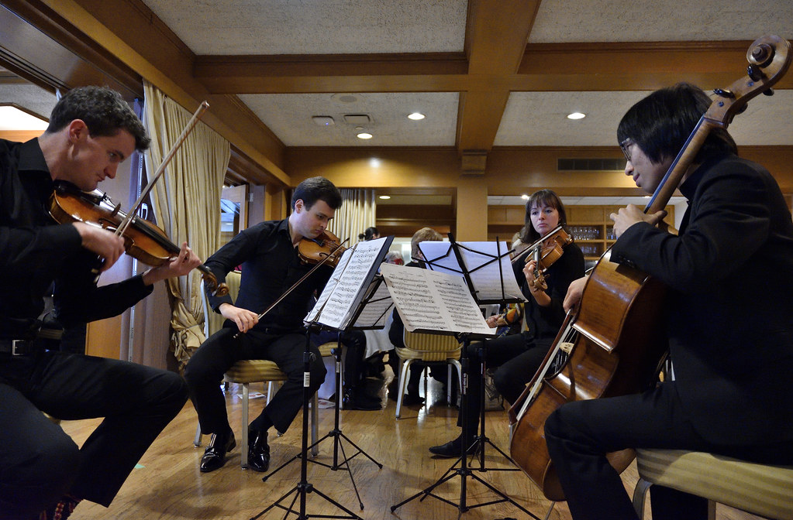

Музыка · 36-бөлім · Соната Music · Section 36 · Sonata & Chamber Музыка · Раздел 36 · Соната и камерная музыка
Соната — бір-екі аспапқа арналған ірі шығарма; камералық музыка — кіші құрам үшін (трио, квартет, квинтет). A sonata is a large work for one or two instruments; chamber music is for a small ensemble (trio, quartet, quintet). Соната — крупное произведение для одного-двух инструментов; камерная музыка — для небольшого состава (трио, квартет, квинтет).
Соната — бір аспапқа арналған ірі шығарма (фортепианалық соната) немесе аспап пен фортепианоға (скрипка + фортепиано). A sonata is a large work for one instrument (a piano sonata) or for an instrument with piano (violin + piano). Соната — крупное произведение для одного инструмента (фортепианная соната) или для инструмента с фортепиано (скрипка + фортепиано).
Әдетте соната 3 бөлімнен тұрады: жылдам – баяу – жылдам. A sonata usually has 3 movements: fast – slow – fast. Обычно соната состоит из 3 частей: быстро – медленно – быстро.
Бірінші бөлім көбіне соната формасында жазылады — екі тақырыптың кездесуі мен дамуы. The first movement is often written in sonata form — two themes meet and develop. Первая часть чаще всего написана в сонатной форме — встреча и развитие двух тем.
💡 «Соната» сөзі итальянша sonare — «ойнау, дыбыстау» дегеннен шыққан (айтылатын «кантатаға» қарама-қарсы). 💡 The word "sonata" comes from the Italian sonare — "to sound, to play" (as opposed to the sung "cantata"). 💡 Слово «соната» происходит от итальянского sonare — «звучать, играть» (в отличие от пения — «кантаты»).

| БөлімStageРаздел | Не боладыWhat happensЧто происходит |
|---|---|
| 1️⃣ ЭКСПОЗИЦИЯEXPOSITIONЭКСПОЗИЦИЯ | екі тақырыпты көрсету — басты және қосалқыtwo themes are shown — the main and the secondaryпоказ двух тем — главной и побочной |
| 2️⃣ ӨҢДЕУDEVELOPMENTРАЗРАБОТКА | тақырыптардың дамуы, қақтығысыdevelopment and clash of the themesразвитие, столкновение тем |
| 3️⃣ РЕПРИЗАRECAPITULATIONРЕПРИЗА | тақырыптардың қайта оралуыthe return of the themesвозвращение тем |
📌 Камералық музыка — кіші құрамға арналған музыка (әр партияға бір орындаушы), кіші залда («камерада») дирижёрсіз орындалады. 📌 Chamber music is music for a small ensemble (one player per part), performed in a small hall (a "chamber") without a conductor. 📌 Камерная музыка — музыка для небольшого состава (по одному исполнителю на партию), для исполнения в небольшом зале («камере»), без дирижёра.
ДУЭТDUETДУЭТ
22 орындаушы2 players2 исполнителя
ТРИОTRIOТРИО
33 орындаушы3 players3 исполнителя
КВАРТЕТQUARTETКВАРТЕТ
4жиі ішекті: 2 скрипка, альт, виолончельoften a string quartet: 2 violins, viola, celloчаще струнный: 2 скрипки, альт, виолончель
КВИНТЕТQUINTETКВИНТЕТ
55 орындаушы5 players5 исполнителей
Квартетте төрт дауыс бір аккордқа қосылады. Әр аспап — жеке партия, бәрі бірге үндеседі. In a quartet four voices blend into one chord. Each instrument has its own part, all sounding together. В квартете четыре голоса сливаются в один аккорд. Каждый инструмент — своя партия, все звучат вместе.